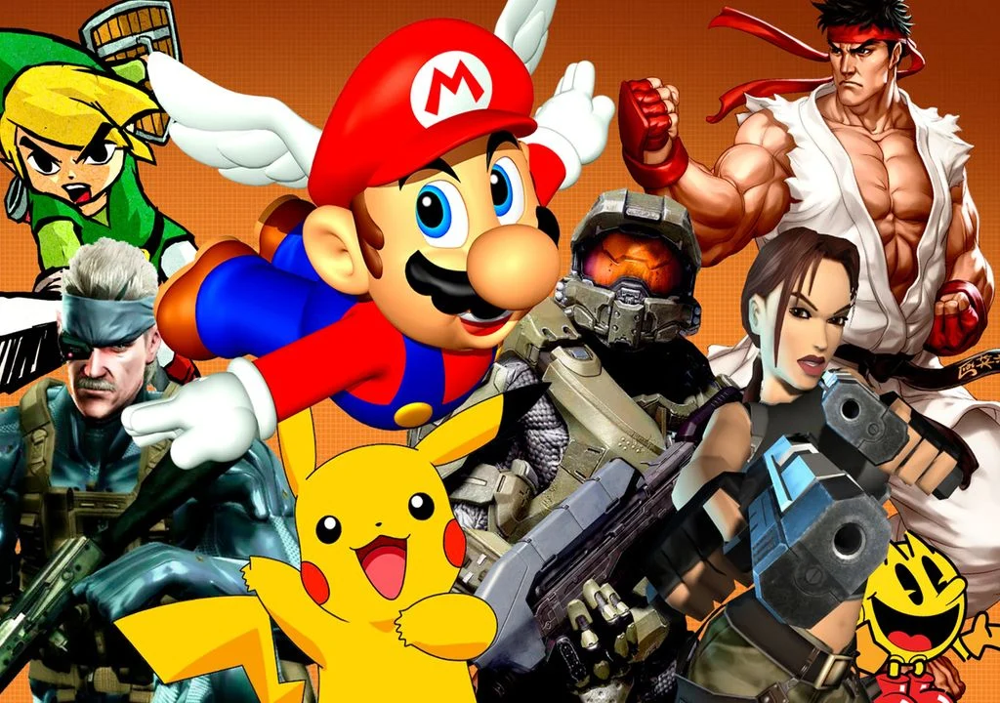

En esta página web hablare de los videjuegos que a mi punto de vista son los mejores que he jugado, sin importar el genero,ni la plataforma en la que se encuentre disponible el juego, con esto basandome en desiciones propias y totalmente subjetivas para poder evaluar el juego sin ser cegado por la nostalgia o el titulo en si; esto con el unico proposito de compartir mis gustos en los videjuegos.
Esto con la única finalidad de poder mostrar a otras personas algunos juegos que deberian de darles una oportunidad, ya que debido a cierto tipo de jugadores piensan que los videjuegos son solo para divertirse, aunque esa sea una razon buena para jugarlos, algunos titulos cuentan con historias tan buenas, que seria muy dificil plasmarlo en una película.
